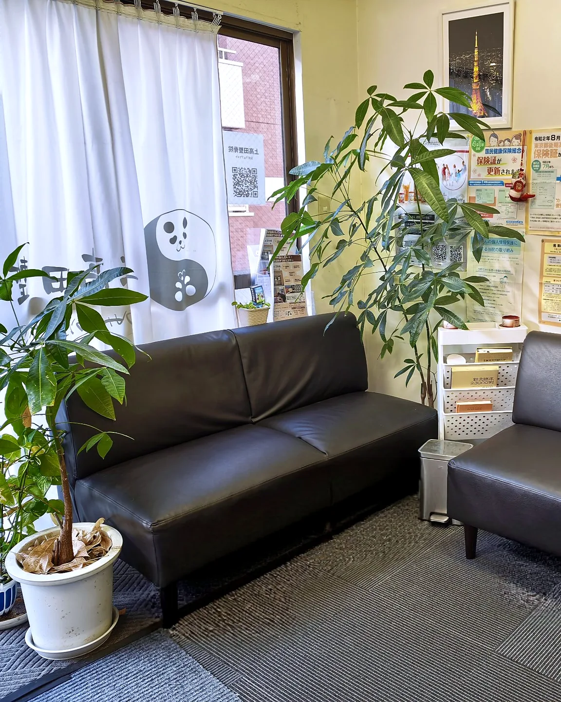
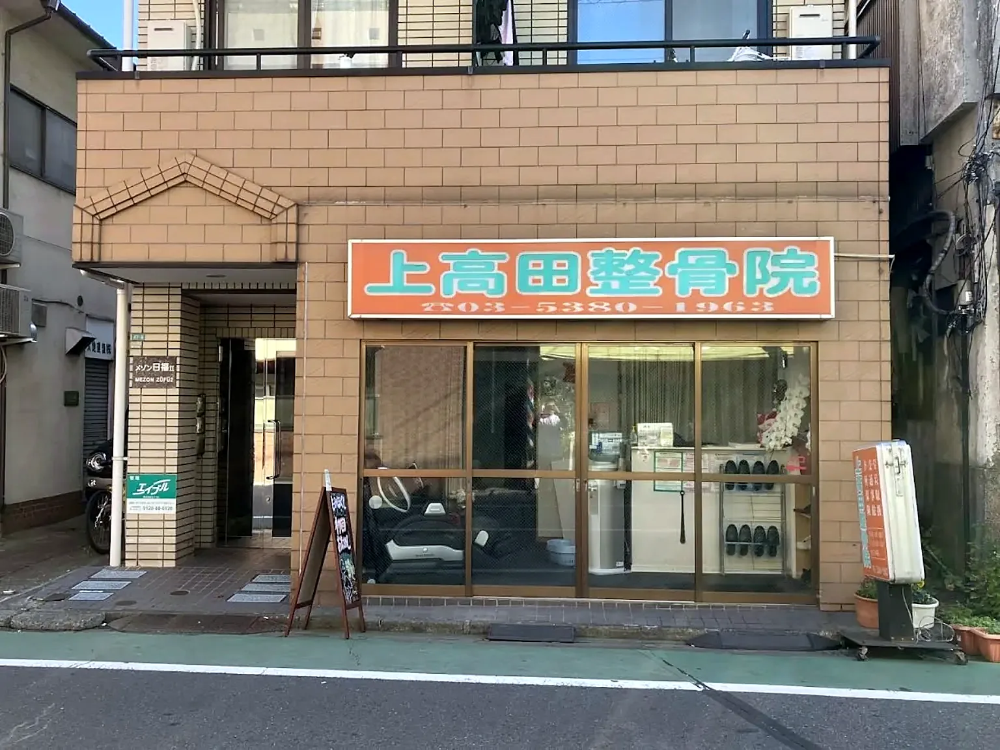
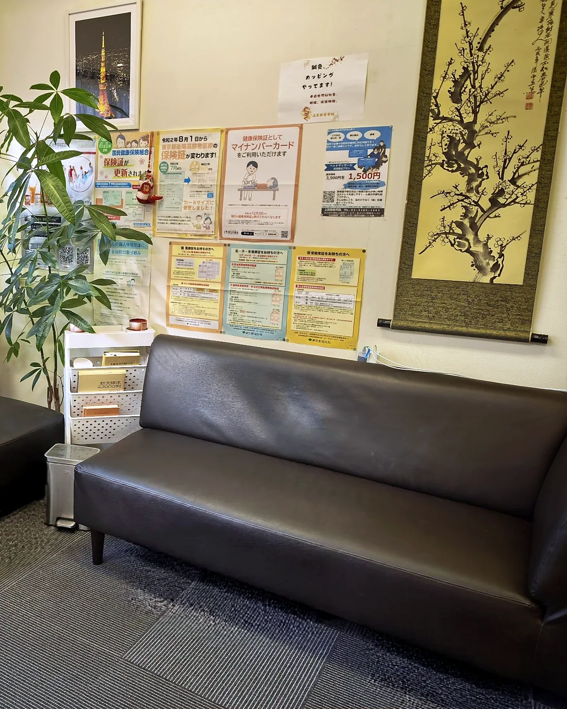

丁寧なカウンセリング
はじめての方にも安心していただけるよう、痛みや不安をしっかり伺います。
新井薬師前駅近く・予約優先
肩こり、腰痛、スポーツによるケガなど、お身体の悩みをお気軽にご相談ください。
身近で相談しやすい整骨院を目指しています。
上高田整骨院では、現在のお身体の状態や生活習慣を丁寧に伺い、症状に合わせた施術をご提案します。
日常のつらさからスポーツ時の違和感まで、無理なく通える落ち着いた環境でサポートします。

はじめての方にも安心していただけるよう、痛みや不安をしっかり伺います。
マニュアル通りではなく、身体の状態を見ながら無理のない施術を行います。
部活動や運動によるケガ、違和感、競技復帰までご相談いただけます。
電話またはWeb予約をご利用ください。
受付後、必要事項をご記入いただきます。
症状や生活習慣を確認します。
状態に合わせて施術を行います。
日常生活での注意点もお伝えします。


予約優先です。電話またはLINEから事前にご連絡いただくとスムーズです。
症状や原因によって適用できる場合があります。詳しくは来院時にご相談ください。
動きやすい服装でお越しください。必要に応じてお着替えもご案内します。